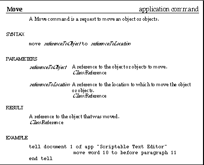

Using Command Definitions
Command definitions contain information about what commands do and how to use them in scripts. Figure 4-1 shows the definition for the Move command, an application command. The definition contains four types of information: syntax, parameters, results, and examples. Some definitions include information about errors as well. The sections following the figure explain the information conveyed by each part of the definition.Figure 4-1 Command definition for the Move command

Subtopics
- Syntax
- Parameters
- Result
- Examples
- Errors